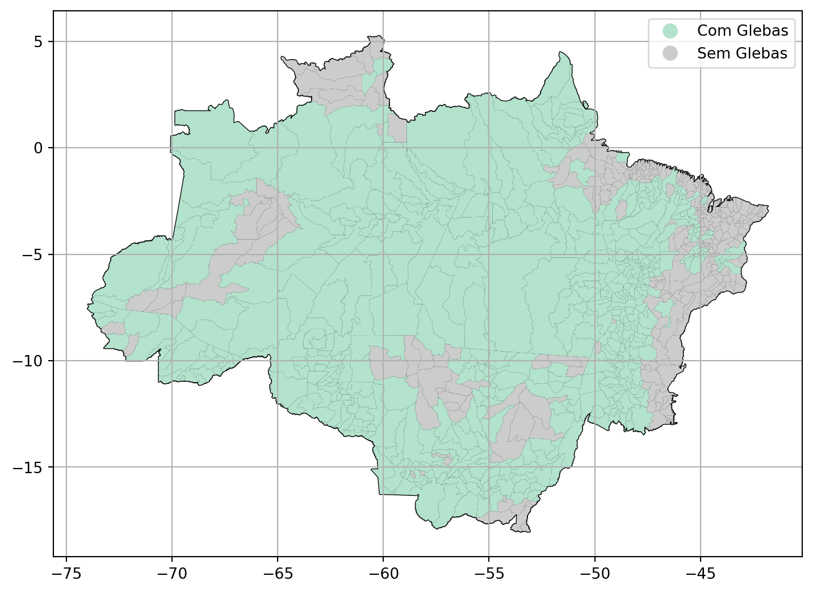

15 Análise dos Municípios na área de estudo.
A área de estudo contempla 808 municípios nos nas 09 unidades da federação. Destes, 512 possuem áreas de glebas publicas federais em seu território.
15.1 Mapa dos Municípios na área de estudo.
15.2 Tabela dos Municípios com glebas publicas federais.
| Estado | Código do Município | Nome do Município |
|---|---|---|
| Acre | 1200427 | Rodrigues Alves |
| Acre | 1200708 | Xapuri |
| Acre | 1200609 | Tarauacá |
| Acre | 1200500 | Sena Madureira |
| Acre | 1200450 | Senador Guiomard |
| Acre | 1200013 | Acrelândia |
| Acre | 1200054 | Assis Brasil |
| Acre | 1200435 | Santa Rosa do Purus |
| Acre | 1200807 | Porto Acre |
| Acre | 1200104 | Brasiléia |
| Acre | 1200179 | Capixaba |
| Acre | 1200203 | Cruzeiro do Sul |
| Acre | 1200252 | Epitaciolândia |
| Acre | 1200302 | Feijó |
| Acre | 1200401 | Rio Branco |
| Acre | 1200385 | Plácido de Castro |
| Acre | 1200336 | Mâncio Lima |
| Acre | 1200138 | Bujari |
| Acre | 1200351 | Marechal Thaumaturgo |
| Acre | 1200344 | Manoel Urbano |
| Amapá | 1600204 | Calçoene |
| Amapá | 1600279 | Laranjal do Jari |
| Amapá | 1600402 | Mazagão |
| Amapá | 1600253 | Itaubal |
| Amapá | 1600501 | Oiapoque |
| Amapá | 1600238 | Ferreira Gomes |
| Amapá | 1600535 | Porto Grande |
| Amapá | 1600212 | Cutias |
| Amapá | 1600154 | Pedra Branca do Amapari |
| Amapá | 1600105 | Amapá |
| Amapá | 1600055 | Serra do Navio |
| Amapá | 1600550 | Pracuúba |
| Amapá | 1600600 | Santana |
| Amapá | 1600709 | Tartarugalzinho |
| Amapá | 1600303 | Macapá |
| Amazonas | 1303403 | Parintins |
| Amazonas | 1303809 | São Gabriel da Cachoeira |
| Amazonas | 1303700 | Santo Antônio do Içá |
| Amazonas | 1304005 | Silves |
| Amazonas | 1300086 | Anamã |
| Amazonas | 1300060 | Amaturá |
| Amazonas | 1303601 | Santa Isabel do Rio Negro |
| Amazonas | 1304104 | Tapauá |
| Amazonas | 1302702 | Manicoré |
| Amazonas | 1304062 | Tabatinga |
| Amazonas | 1303569 | Rio Preto da Eva |
| Amazonas | 1303502 | Pauini |
| Amazonas | 1302900 | Maués |
| Amazonas | 1303007 | Nhamundá |
| Amazonas | 1303106 | Nova Olinda do Norte |
| Amazonas | 1303536 | Presidente Figueiredo |
| Amazonas | 1303205 | Novo Airão |
| Amazonas | 1300102 | Anori |
| Amazonas | 1303304 | Novo Aripuanã |
| Amazonas | 1303908 | São Paulo de Olivença |
| Amazonas | 1304237 | Tonantins |
| Amazonas | 1302504 | Manacapuru |
| Amazonas | 1302553 | Manaquiri |
| Amazonas | 1304302 | Urucará |
| Amazonas | 1302405 | Lábrea |
| Amazonas | 1304401 | Urucurituba |
| Amazonas | 1302306 | Jutaí |
| Amazonas | 1302108 | Japurá |
| Amazonas | 1302009 | Itapiranga |
| Amazonas | 1301902 | Itacoatiara |
| Amazonas | 1301852 | Iranduba |
| Amazonas | 1301704 | Humaitá |
| Amazonas | 1301654 | Guajará |
| Amazonas | 1301308 | Codajás |
| Amazonas | 1301209 | Coari |
| Amazonas | 1301159 | Careiro da Várzea |
| Amazonas | 1301100 | Careiro |
| Amazonas | 1300904 | Canutama |
| Amazonas | 1300839 | Caapiranga |
| Amazonas | 1300805 | Borba |
| Amazonas | 1300706 | Boca do Acre |
| Amazonas | 1302603 | Manaus |
| Amazonas | 1300680 | Boa Vista do Ramos |
| Amazonas | 1300631 | Beruri |
| Amazonas | 1300607 | Benjamin Constant |
| Amazonas | 1300508 | Barreirinha |
| Amazonas | 1300409 | Barcelos |
| Amazonas | 1300300 | Autazes |
| Amazonas | 1300144 | Apuí |
| Amazonas | 1300201 | Atalaia do Norte |
| Amazonas | 1303957 | São Sebastião do Uatumã |
| Maranhão | 2107803 | Parnarama |
| Maranhão | 2105427 | Itinga do Maranhão |
| Maranhão | 2111078 | São João do Soter |
| Maranhão | 2105476 | Jenipapo dos Vieiras |
| Maranhão | 2105500 | João Lisboa |
| Maranhão | 2110856 | São Francisco do Brejão |
| Maranhão | 2105609 | Joselândia |
| Maranhão | 2110039 | Santa Luzia do Paruá |
| Maranhão | 2105658 | Junco do Maranhão |
| Maranhão | 2101970 | Boa Vista do Gurupi |
| Maranhão | 2105708 | Lago da Pedra |
| Maranhão | 2102002 | Bom Jardim |
| Maranhão | 2105963 | Lagoa Grande do Maranhão |
| Maranhão | 2109908 | Santa Inês |
| Maranhão | 2102036 | Bom Jesus das Selvas |
| Maranhão | 2108405 | Peri Mirim |
| Maranhão | 2109809 | Santa Helena |
| Maranhão | 2109551 | Ribamar Fiquene |
| Maranhão | 2106326 | Maracaçumé |
| Maranhão | 2109502 | Riachão |
| Maranhão | 2106375 | Maranhãozinho |
| Maranhão | 2102358 | Buritirana |
| Maranhão | 2106904 | Monção |
| Maranhão | 2109239 | Presidente Médici |
| Maranhão | 2107001 | Montes Altos |
| Maranhão | 2108900 | Poção de Pedras |
| Maranhão | 2107357 | Nova Olinda do Maranhão |
| Maranhão | 2103158 | Centro do Guilherme |
| Maranhão | 2107407 | Olho d'Água das Cunhãs |
| Maranhão | 2108256 | Pedro do Rosário |
| Maranhão | 2108306 | Penalva |
| Maranhão | 2103000 | Caxias |
| Maranhão | 2101905 | Bequimão |
| Maranhão | 2105351 | Itaipava do Grajaú |
| Maranhão | 2111508 | São Mateus do Maranhão |
| Maranhão | 2100402 | Altamira do Maranhão |
| Maranhão | 2100055 | Açailândia |
| Maranhão | 2114007 | Zé Doca |
| Maranhão | 2113009 | Vitorino Freire |
| Maranhão | 2112852 | Vila Nova dos Martírios |
| Maranhão | 2111763 | Senador La Rocque |
| Maranhão | 2111748 | Senador Alexandre Costa |
| Maranhão | 2100600 | Amarante do Maranhão |
| Maranhão | 2103174 | Centro Novo do Maranhão |
| Maranhão | 2100873 | Araguanã |
| Maranhão | 2111722 | Satubinha |
| Maranhão | 2103257 | Cidelândia |
| Maranhão | 2111672 | São Roberto |
| Maranhão | 2105302 | Imperatriz |
| Maranhão | 2101202 | Bacabal |
| Maranhão | 2103752 | Davinópolis |
| Maranhão | 2108702 | Pio XII |
| Maranhão | 2101608 | Barra do Corda |
| Maranhão | 2104057 | Estreito |
| Maranhão | 2111631 | São Raimundo do Doca Bezerra |
| Maranhão | 2104206 | Fortuna |
| Maranhão | 2111532 | São Pedro da Água Branca |
| Maranhão | 2104404 | Gonçalves Dias |
| Maranhão | 2104552 | Governador Edison Lobão |
| Maranhão | 2104602 | Governador Eugênio Barros |
| Maranhão | 2105153 | Igarapé do Meio |
| Maranhão | 2104008 | Esperantinópolis |
| Maranhão | 2101772 | Bela Vista do Maranhão |
| Maranhão | 2104628 | Governador Luiz Rocha |
| Maranhão | 2104651 | Governador Newton Bello |
| Maranhão | 2104677 | Governador Nunes Freire |
| Mato Grosso | 5107008 | Poxoréu |
| Mato Grosso | 5107156 | Reserva do Cabaçal |
| Mato Grosso | 5107107 | São José dos Quatro Marcos |
| Mato Grosso | 5107040 | Primavera do Leste |
| Mato Grosso | 5107198 | Ribeirãozinho |
| Mato Grosso | 5107180 | Ribeirão Cascalheira |
| Mato Grosso | 5108352 | Vale de São Domingos |
| Mato Grosso | 5107305 | São José do Rio Claro |
| Mato Grosso | 5108204 | Torixoréu |
| Mato Grosso | 5108402 | Várzea Grande |
| Mato Grosso | 5108105 | Tesouro |
| Mato Grosso | 5108501 | Vera |
| Mato Grosso | 5108055 | Terra Nova do Norte |
| Mato Grosso | 5108808 | Nova Guarita |
| Mato Grosso | 5108857 | Nova Marilândia |
| Mato Grosso | 5108907 | Nova Maringá |
| Mato Grosso | 5107958 | Tangará da Serra |
| Mato Grosso | 5107925 | Sorriso |
| Mato Grosso | 5107909 | Sinop |
| Mato Grosso | 5107883 | Serra Nova Dourada |
| Mato Grosso | 5107875 | Sapezal |
| Mato Grosso | 5107859 | São Félix do Araguaia |
| Mato Grosso | 5107800 | Santo Antônio do Leverger |
| Mato Grosso | 5107792 | Santo Antônio do Leste |
| Mato Grosso | 5108303 | União do Sul |
| Mato Grosso | 5107750 | Salto do Céu |
| Mato Grosso | 5107701 | Rosário Oeste |
| Mato Grosso | 5107602 | Rondonópolis |
| Mato Grosso | 5107578 | Rondolândia |
| Mato Grosso | 5107404 | São Pedro da Cipa |
| Mato Grosso | 5107354 | São José do Xingu |
| Mato Grosso | 5107248 | Santa Carmem |
| Mato Grosso | 5107768 | Santa Rita do Trivelato |
| Mato Grosso | 5106109 | Nossa Senhora do Livramento |
| Mato Grosso | 5106828 | Porto Esperidião |
| Mato Grosso | 5103809 | Figueirópolis D'Oeste |
| Mato Grosso | 5103601 | Dom Aquino |
| Mato Grosso | 5103502 | Diamantino |
| Mato Grosso | 5103437 | Curvelândia |
| Mato Grosso | 5103403 | Cuiabá |
| Mato Grosso | 5103361 | Conquista D'Oeste |
| Mato Grosso | 5103353 | Confresa |
| Mato Grosso | 5103304 | Comodoro |
| Mato Grosso | 5103254 | Colniza |
| Mato Grosso | 5103205 | Colíder |
| Mato Grosso | 5103106 | Cocalinho |
| Mato Grosso | 5103056 | Cláudia |
| Mato Grosso | 5106851 | Porto Estrela |
| Mato Grosso | 5102793 | Carlinda |
| Mato Grosso | 5102694 | Canabrava do Norte |
| Mato Grosso | 5102686 | Campos de Júlio |
| Mato Grosso | 5102678 | Campo Verde |
| Mato Grosso | 5100102 | Acorizal |
| Mato Grosso | 5100201 | Água Boa |
| Mato Grosso | 5100250 | Alta Floresta |
| Mato Grosso | 5100508 | Alto Paraguai |
| Mato Grosso | 5100805 | Apiacás |
| Mato Grosso | 5101001 | Araguaiana |
| Mato Grosso | 5103908 | General Carneiro |
| Mato Grosso | 5101258 | Araputanga |
| Mato Grosso | 5101704 | Barra do Bugres |
| Mato Grosso | 5101803 | Barra do Garças |
| Mato Grosso | 5101852 | Bom Jesus do Araguaia |
| Mato Grosso | 5102504 | Cáceres |
| Mato Grosso | 5102603 | Campinápolis |
| Mato Grosso | 5102637 | Campo Novo do Parecis |
| Mato Grosso | 5101605 | Barão de Melgaço |
| Mato Grosso | 5103957 | Glória D'Oeste |
| Mato Grosso | 5103007 | Chapada dos Guimarães |
| Mato Grosso | 5104203 | Guiratinga |
| Mato Grosso | 5106208 | Nova Brasilândia |
| Mato Grosso | 5106216 | Nova Canaã do Norte |
| Mato Grosso | 5106224 | Nova Mutum |
| Mato Grosso | 5106232 | Nova Olímpia |
| Mato Grosso | 5106257 | Nova Xavantina |
| Mato Grosso | 5106265 | Novo Mundo |
| Mato Grosso | 5106190 | Nova Santa Helena |
| Mato Grosso | 5106281 | Novo São Joaquim |
| Mato Grosso | 5106422 | Peixoto de Azevedo |
| Mato Grosso | 5106505 | Poconé |
| Mato Grosso | 5106653 | Pontal do Araguaia |
| Mato Grosso | 5106752 | Pontes e Lacerda |
| Mato Grosso | 5104104 | Guarantã do Norte |
| Mato Grosso | 5106778 | Porto Alegre do Norte |
| Mato Grosso | 5106315 | Novo Santo Antônio |
| Mato Grosso | 5106182 | Nova Lacerda |
| Mato Grosso | 5106240 | Nova Ubiratã |
| Mato Grosso | 5104906 | Jangada |
| Mato Grosso | 5104807 | Jaciara |
| Mato Grosso | 5106174 | Nova Nazaré |
| Mato Grosso | 5105002 | Jauru |
| Mato Grosso | 5105150 | Juína |
| Mato Grosso | 5105200 | Juscimeira |
| Mato Grosso | 5105259 | Lucas do Rio Verde |
| Mato Grosso | 5105309 | Luciara |
| Mato Grosso | 5105234 | Lambari D'Oeste |
| Mato Grosso | 5105580 | Marcelândia |
| Mato Grosso | 5105606 | Matupá |
| Mato Grosso | 5105622 | Mirassol d'Oeste |
| Mato Grosso | 5105903 | Nobres |
| Mato Grosso | 5106000 | Nortelândia |
| Mato Grosso | 5105507 | Vila Bela da Santíssima Trindade |
| Pará | 1506559 | Santa Luzia do Pará |
| Pará | 1507151 | São Domingos do Araguaia |
| Pará | 1506807 | Santarém |
| Pará | 1506708 | Santana do Araguaia |
| Pará | 1506583 | Santa Maria das Barreiras |
| Pará | 1506195 | Rurópolis |
| Pará | 1505650 | Placas |
| Pará | 1506161 | Rio Maria |
| Pará | 1506138 | Redenção |
| Pará | 1506005 | Prainha |
| Pará | 1505908 | Porto de Moz |
| Pará | 1505809 | Portel |
| Pará | 1507201 | São Domingos do Capim |
| Pará | 1506187 | Rondon do Pará |
| Pará | 1507300 | São Félix do Xingu |
| Pará | 1508407 | Xinguara |
| Pará | 1507508 | São João do Araguaia |
| Pará | 1507755 | Sapucaia |
| Pará | 1507805 | Senador José Porfírio |
| Pará | 1507904 | Soure |
| Pará | 1507979 | Terra Santa |
| Pará | 1508001 | Tomé-Açu |
| Pará | 1508050 | Trairão |
| Pará | 1508084 | Tucumã |
| Pará | 1508100 | Tucuruí |
| Pará | 1508126 | Ulianópolis |
| Pará | 1508159 | Uruará |
| Pará | 1508308 | Viseu |
| Pará | 1508357 | Vitória do Xingu |
| Pará | 1505635 | Piçarra |
| Pará | 1507458 | São Geraldo do Araguaia |
| Pará | 1505551 | Pau D'Arco |
| Pará | 1502939 | Dom Eliseu |
| Pará | 1505502 | Paragominas |
| Pará | 1502772 | Curionópolis |
| Pará | 1502764 | Cumaru do Norte |
| Pará | 1502756 | Concórdia do Pará |
| Pará | 1502707 | Conceição do Araguaia |
| Pará | 1502301 | Capitão Poço |
| Pará | 1502152 | Canaã dos Carajás |
| Pará | 1501907 | Bujaru |
| Pará | 1501808 | Breves |
| Pará | 1501782 | Breu Branco |
| Pará | 1501758 | Brejo Grande do Araguaia |
| Pará | 1501725 | Brasil Novo |
| Pará | 1502855 | Curuá |
| Pará | 1501576 | Bom Jesus do Tocantins |
| Pará | 1501253 | Bannach |
| Pará | 1501204 | Baião |
| Pará | 1501006 | Aveiro |
| Pará | 1500958 | Aurora do Pará |
| Pará | 1500131 | Abel Figueiredo |
| Pará | 1500206 | Acará |
| Pará | 1500347 | Água Azul do Norte |
| Pará | 1500404 | Alenquer |
| Pará | 1500503 | Almeirim |
| Pará | 1500602 | Altamira |
| Pará | 1500859 | Anapu |
| Pará | 1501451 | Belterra |
| Pará | 1502954 | Eldorado do Carajás |
| Pará | 1505536 | Parauapebas |
| Pará | 1503044 | Floresta do Araguaia |
| Pará | 1503002 | Faro |
| Pará | 1505064 | Novo Repartimento |
| Pará | 1505031 | Novo Progresso |
| Pará | 1505304 | Oriximiná |
| Pará | 1505403 | Ourém |
| Pará | 1505437 | Ourilândia do Norte |
| Pará | 1505486 | Pacajá |
| Pará | 1505494 | Palestina do Pará |
| Pará | 1504976 | Nova Ipixuna |
| Pará | 1504950 | Nova Esperança do Piriá |
| Pará | 1504802 | Monte Alegre |
| Pará | 1504752 | Mojuí dos Campos |
| Pará | 1505106 | Óbidos |
| Pará | 1504455 | Medicilândia |
| Pará | 1503077 | Garrafão do Norte |
| Pará | 1504703 | Moju |
| Pará | 1503093 | Goianésia do Pará |
| Pará | 1503507 | Irituia |
| Pará | 1503606 | Itaituba |
| Pará | 1503457 | Ipixuna do Pará |
| Pará | 1503754 | Jacareacanga |
| Pará | 1503804 | Jacundá |
| Pará | 1503903 | Juruti |
| Pará | 1504059 | Mãe do Rio |
| Pará | 1504208 | Marabá |
| Pará | 1503705 | Itupiranga |
| Rondônia | 1100924 | Chupinguaia |
| Rondônia | 1101435 | Nova União |
| Rondônia | 1100940 | Cujubim |
| Rondônia | 1101005 | Governador Jorge Teixeira |
| Rondônia | 1101104 | Itapuã do Oeste |
| Rondônia | 1101203 | Ministro Andreazza |
| Rondônia | 1101302 | Mirante da Serra |
| Rondônia | 1101401 | Monte Negro |
| Rondônia | 1101450 | Parecis |
| Rondônia | 1101559 | Teixeirópolis |
| Rondônia | 1101476 | Primavera de Rondônia |
| Rondônia | 1101484 | São Felipe D'Oeste |
| Rondônia | 1101492 | São Francisco do Guaporé |
| Rondônia | 1101500 | Seringueiras |
| Rondônia | 1101609 | Theobroma |
| Rondônia | 1101708 | Urupá |
| Rondônia | 1101757 | Vale do Anari |
| Rondônia | 1101807 | Vale do Paraíso |
| Rondônia | 1100908 | Castanheiras |
| Rondônia | 1101468 | Pimenteiras do Oeste |
| Rondônia | 1100809 | Candeias do Jamari |
| Rondônia | 1100304 | Vilhena |
| Rondônia | 1100601 | Cacaulândia |
| Rondônia | 1100023 | Ariquemes |
| Rondônia | 1100031 | Cabixi |
| Rondônia | 1100049 | Cacoal |
| Rondônia | 1100056 | Cerejeiras |
| Rondônia | 1100064 | Colorado do Oeste |
| Rondônia | 1100072 | Corumbiara |
| Rondônia | 1100098 | Espigão D'Oeste |
| Rondônia | 1100106 | Guajará-Mirim |
| Rondônia | 1100114 | Jaru |
| Rondônia | 1100122 | Ji-Paraná |
| Rondônia | 1100130 | Machadinho D'Oeste |
| Rondônia | 1100148 | Nova Brasilândia D'Oeste |
| Rondônia | 1100700 | Campo Novo de Rondônia |
| Rondônia | 1100155 | Ouro Preto do Oeste |
| Rondônia | 1100205 | Porto Velho |
| Rondônia | 1100254 | Presidente Médici |
| Rondônia | 1100262 | Rio Crespo |
| Rondônia | 1100288 | Rolim de Moura |
| Rondônia | 1100296 | Santa Luzia D'Oeste |
| Rondônia | 1100320 | São Miguel do Guaporé |
| Rondônia | 1100338 | Nova Mamoré |
| Rondônia | 1100346 | Alvorada D'Oeste |
| Rondônia | 1100379 | Alto Alegre dos Parecis |
| Rondônia | 1100403 | Alto Paraíso |
| Rondônia | 1100452 | Buritis |
| Rondônia | 1100502 | Novo Horizonte do Oeste |
| Rondônia | 1100189 | Pimenta Bueno |
| Rondônia | 1100080 | Costa Marques |
| Rondônia | 1100015 | Alta Floresta D'Oeste |
| Roraima | 1400506 | São João da Baliza |
| Roraima | 1400472 | Rorainópolis |
| Roraima | 1400407 | Normandia |
| Roraima | 1400209 | Caracaraí |
| Roraima | 1400100 | Boa Vista |
| Tocantins | 1704105 | Centenário |
| Tocantins | 1704600 | Chapada de Areia |
| Tocantins | 1705102 | Chapada da Natividade |
| Tocantins | 1705508 | Colinas do Tocantins |
| Tocantins | 1706001 | Couto Magalhães |
| Tocantins | 1706100 | Cristalândia |
| Tocantins | 1706258 | Crixás do Tocantins |
| Tocantins | 1706506 | Darcinópolis |
| Tocantins | 1707108 | Divinópolis do Tocantins |
| Tocantins | 1707207 | Dois Irmãos do Tocantins |
| Tocantins | 1707306 | Dueré |
| Tocantins | 1713205 | Miracema do Tocantins |
| Tocantins | 1703891 | Carrasco Bonito |
| Tocantins | 1707652 | Figueirópolis |
| Tocantins | 1707702 | Filadélfia |
| Tocantins | 1708205 | Formoso do Araguaia |
| Tocantins | 1708254 | Tabocão |
| Tocantins | 1708304 | Goianorte |
| Tocantins | 1709005 | Goiatins |
| Tocantins | 1709302 | Guaraí |
| Tocantins | 1709500 | Gurupi |
| Tocantins | 1709807 | Ipueiras |
| Tocantins | 1707405 | Esperantina |
| Tocantins | 1707553 | Fátima |
| Tocantins | 1703883 | Carmolândia |
| Tocantins | 1703826 | Cachoeirinha |
| Tocantins | 1700251 | Abreulândia |
| Tocantins | 1700301 | Aguiarnópolis |
| Tocantins | 1700350 | Aliança do Tocantins |
| Tocantins | 1700707 | Alvorada |
| Tocantins | 1701002 | Ananás |
| Tocantins | 1701051 | Angico |
| Tocantins | 1701101 | Aparecida do Rio Negro |
| Tocantins | 1701309 | Aragominas |
| Tocantins | 1701903 | Araguacema |
| Tocantins | 1702000 | Araguaçu |
| Tocantins | 1702109 | Araguaína |
| Tocantins | 1702158 | Araguanã |
| Tocantins | 1702208 | Araguatins |
| Tocantins | 1702307 | Arapoema |
| Tocantins | 1702554 | Augustinópolis |
| Tocantins | 1702901 | Axixá do Tocantins |
| Tocantins | 1703008 | Babaçulândia |
| Tocantins | 1703057 | Bandeirantes do Tocantins |
| Tocantins | 1703073 | Barra do Ouro |
| Tocantins | 1703107 | Barrolândia |
| Tocantins | 1703206 | Bernardo Sayão |
| Tocantins | 1703305 | Bom Jesus do Tocantins |
| Tocantins | 1703602 | Brasilândia do Tocantins |
| Tocantins | 1703701 | Brejinho de Nazaré |
| Tocantins | 1703800 | Buriti do Tocantins |
| Tocantins | 1703867 | Cariri do Tocantins |
| Tocantins | 1710508 | Itacajá |
| Tocantins | 1710706 | Itaguatins |
| Tocantins | 1710904 | Itapiratins |
| Tocantins | 1718550 | Riachinho |
| Tocantins | 1718451 | Pugmil |
| Tocantins | 1718402 | Presidente Kennedy |
| Tocantins | 1718303 | Praia Norte |
| Tocantins | 1718204 | Porto Nacional |
| Tocantins | 1717503 | Pium |
| Tocantins | 1717206 | Piraquê |
| Tocantins | 1716703 | Colméia |
| Tocantins | 1716653 | Pequizeiro |
| Tocantins | 1716604 | Peixe |
| Tocantins | 1716505 | Pedro Afonso |
| Tocantins | 1716307 | Pau D'Arco |
| Tocantins | 1718709 | Rio dos Bois |
| Tocantins | 1716208 | Paranã |
| Tocantins | 1715754 | Palmeirópolis |
| Tocantins | 1715705 | Palmeirante |
| Tocantins | 1715507 | Oliveira de Fátima |
| Tocantins | 1715002 | Nova Rosalândia |
| Tocantins | 1714880 | Nova Olinda |
| Tocantins | 1714302 | Nazaré |
| Tocantins | 1714203 | Natividade |
| Tocantins | 1712504 | Marianópolis do Tocantins |
| Tocantins | 1713809 | Palmeiras do Tocantins |
| Tocantins | 1713700 | Monte Santo do Tocantins |
| Tocantins | 1713601 | Monte do Carmo |
| Tocantins | 1713304 | Miranorte |
| Tocantins | 1716109 | Paraíso do Tocantins |
| Tocantins | 1712801 | Maurilândia do Tocantins |
| Tocantins | 1718758 | Rio Sono |
| Tocantins | 1718840 | Sandolândia |
| Tocantins | 1711100 | Itaporã do Tocantins |
| Tocantins | 1711506 | Jaú do Tocantins |
| Tocantins | 1711902 | Lagoa da Confusão |
| Tocantins | 1712009 | Lajeado |
| Tocantins | 1712454 | Luzinópolis |
| Tocantins | 1722107 | Xambioá |
| Tocantins | 1722081 | Wanderlândia |
| Tocantins | 1721307 | Tupiratins |
| Tocantins | 1721257 | Tupirama |
| Tocantins | 1721208 | Tocantinópolis |
| Tocantins | 1721109 | Tocantínia |
| Tocantins | 1721000 | Palmas |
| Tocantins | 1718808 | Sampaio |
| Tocantins | 1720978 | Talismã |
| Tocantins | 1720804 | Sítio Novo do Tocantins |
| Tocantins | 1720655 | Silvanópolis |
| Tocantins | 1720499 | São Valério |
| Tocantins | 1720309 | São Sebastião do Tocantins |
| Tocantins | 1720259 | São Salvador do Tocantins |
| Tocantins | 1720200 | São Miguel do Tocantins |
| Tocantins | 1720101 | São Bento do Tocantins |
| Tocantins | 1720002 | Santa Terezinha do Tocantins |
| Tocantins | 1718907 | Santa Rosa do Tocantins |
| Tocantins | 1718899 | Santa Rita do Tocantins |
| Tocantins | 1718881 | Santa Maria do Tocantins |
| Tocantins | 1718865 | Santa Fé do Araguaia |
| Tocantins | 1720853 | Sucupira |
| Tocantins | 1713957 | Muricilândia |